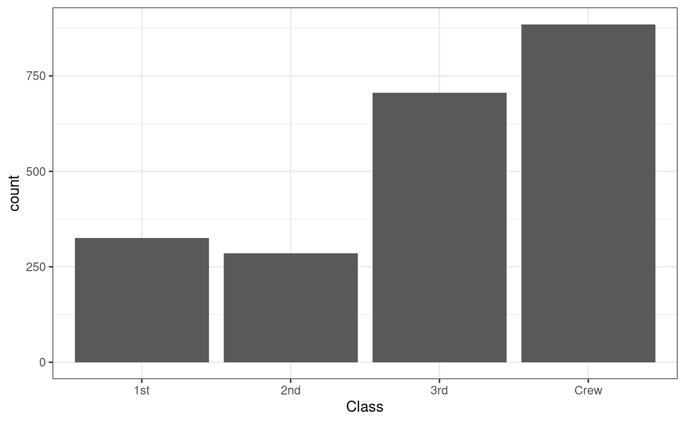
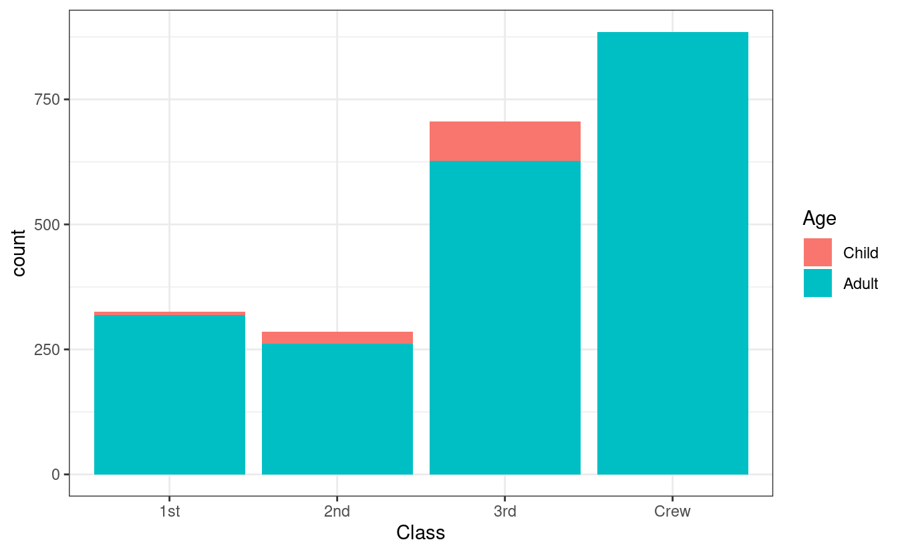
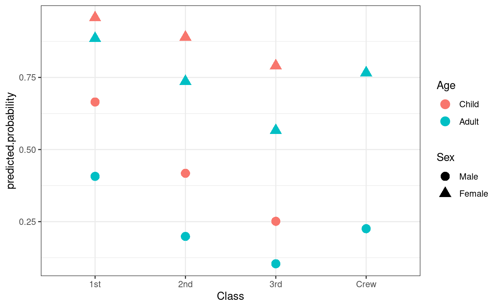

4 Going Through a Project from Start to Finish
To start off, we’re going to look at an example analysis. This will go step-by-step through loading data, exploring the dataset, running a regression, and commuicating the results. You may not understand everything and this point, but you’ll start to get familiar with R’s syntax and won’t have to wait 100 pages before trying out something useful. The following chapters will look at each step in detail to explain exactly what is happening, how it relates to STATA commands, and why we’re doing it this way.
Note: A great way to learn a programming language is to start with something that works and then break it. Modify a part of the code and see what changes. Did it do what you expected? Did you get an error message? Playing with the code can help you figure out what each component is doing, why it does it that way, and how you can manipulate it to do what you want.
4.1 Loading packages
Once R is installed, you now have what is called base-R. Base-R comes ready to go with a number of statistical functions, visualizations, and even some sample datasets. There is, however, plenty more that can be done by loading additional packages. Packages are developed by the comunity of R users and typically hosted on CRAN (The Comprehensive R Archive Network). For effeciency, additional packages have to be installed and then loaded when you want to use them. R doesn’t automatically install or load additional packages as this would take up a lot of memory with packages that you’ll never use.
If a package exists on CRAN, it can be installed by writing
install.packages("package.name").
Most packages that you’ll want to use will be hosted on CRAN, but occasionally, new packages that are being developed are only on GitHub. If this is the case, the authors will include instructions on how to install the package in the README.md file of the GitHub repository.
You only have to intall a package once, but you have to call it everytime you open R. It’s the norm to list all of the packages that you’ll be using at the very top of you R script. You call a package with the command
library(package.name)
For this example, were going to use the package modelsummary for making regression tables, dplyr for data manipulation and pipes (%>%), which allow us to string commands together, tidyr for datat cleaning and wrangling, and ggplot2 for making graphs. We can import dplyr. tidyr, and ggplot2, by calling tidyverse1, which automatically loads a collection of packages. So starting out, our script should look like this:
4.2 Loading and prepping the data
For this example, we are going to use one of the preloaded datasets that comes with R. While you’ll never use one of these datasets for actual research, it’s easier to use something that everyone already has to get started with an example. The next chapter will show you how to load data in STATA’s .dta format, as well as other common formats.
For this example, we’ll use the Titanic dataset. This will be obnoxiously familiary for anyone that has done some tutiorials on machine learning. For those unfamiliar, it contains variables on the age, gender, and ticket class for those that were on the titanic, as well as whether or not they survived. To access the data, we type data("Titanic"). You should now see Titanic in the Enivronment tab in RStudio. It’s not quite ready yet, however, as it is not in a data.frame or tibble format. If we type class(Titanic), we see that it’s table. This can be converted with the commands data.frame(Titanic) or as_tibble(Titanic)
For this example, let’s convert the table into a data frame. If you type data.frame(Titanic), the table will be converted to a data frame, and then printed into the console. We don’t want this. We want to store the data frame as an object that we can analyze. In R, you store an object by first typing a name of you choosing, followed by the assignment operator (<-) and then what you want to be stored as the object. It’s best to choose descriptive names for objects, so it’s easy to remember what they are. Let’s use titanic.data. The code should look like this:
You should now see an object called titanic.data in you Environment with 32 observations or 5 variables. If we want to look at the entire dataset, we can type View(titanic.data). If we only want to see the first few rows, we can type head(titanic.data) and the last few rows can be seen with tail(titanic.data). A frequency table can be seen with table(titanic.data). Let’s check that out.
table(titanic.data)As you can see, it’s hard to glean any information from this as frequency is already a variable, with the other variables being collapsed. We can treate a subset without frequency by typing titanic.subset <- titanic.data[(1:4)]. This creates a new data frame called titanic.subset with only contains the first four columns of the titanic.data data frame. Now trying table(titanic.subset), we see eveything has a ferequency of one. To use this data for a regression, let’s expand it so that we have one observation for everyone that was on board. We can do this using the tidyr function uncount(). This function expands
the data frame, based on a variable. The syntax is
uncount(data, weights, .remote = TRUE, .id = NULL)where data is the data frame weights is the variable that has the count of rows to duplicate, .remove deletes the variable supplied to weights (TRUE by defalut) and .id creates a new ID for each row. For our data, let’s type:
Now let’s explore our expanded data. We already used View() to look at the full dataset, but with 2201 observations, it can be hard to tell much about what going on. Instead, we’re going to generate summary statistics with summary(titanic.expanded). This shows of the level of each variable, the number of ovservations at the level, and, implicitly, that there are no missing values. If there were missing values, the last row of each variable would read NA's: followed by the number of rows for which that variable didn’t have a value.
Now that we have a data frame that we can analyze, we no longer need the original data, or the subset we created. We can get rid of these with rm(list = c('Titanic', 'titanic.data', 'titanic.subset')). R can use a lot of memory on your computer, so it’s best to get rid of any objects that you’re no longer using.
4.3 Visualization
Let’s look at our data using some plots. First, we’re going to check the distribution of our variables. Given that all of our variables are factors, a histogram is the was to go. Using ggplot2, we can do this:
ggplot() +
geom_histogram(data = titanic.expanded,
aes(x = Class), stat = 'count') +
theme_bw()
#> Warning: Ignoring unknown parameters: binwidth, bins, pad
The above calls a plot (ggplot()) and then says that we’re going to make a histogram (geom_histogram()). We’re going to use the titanic.expanded data, and we want to see the variable Class. aes() is responsible for creating the mapping, in other words, with the variables that are being plotted. We include stat = 'count' as we’re looking at the frequenqy of each level of the variable Class. Finally, theme_bw() styles the graph. This part is optional, and there are plenty of other themes you can choose from, including custom themes that you can make yourself. ggplot2 uses the grammar of graphics which layers different aspects of a visualiztion on top of each other. Each layer is connected with a +. While you could keep everything on one line and the code will still run, it is best to end each line with a + and the start on the next line with an indent. This keeps the code organized and easy to read.
Now say you also wanted to show how many within each class were chilren and how many were adults. This could be done by changing the fill.
ggplot() +
geom_histogram(data = titanic.expanded,
aes(x = Class, fill = Age), stat = 'count') +
theme_bw()
#> Warning: Ignoring unknown parameters: binwidth, bins, pad
4.4 Modeling
We’re going to build a model to predict whether or not someone would survive based on the variables we have. Survived is a binary variable, so we’ll estimate a logit model.
titanic.logit <- glm(Survived ~ Class + Sex + Age,
data = titanic.expanded, family = 'binomial')
summary(titanic.logit)
#>
#> Call:
#> glm(formula = Survived ~ Class + Sex + Age, family = "binomial",
#> data = titanic.expanded)
#>
#> Deviance Residuals:
#> Min 1Q Median 3Q Max
#> -2.0812 -0.7149 -0.6656 0.6858 2.1278
#>
#> Coefficients:
#> Estimate Std. Error z value Pr(>|z|)
#> (Intercept) 0.6853 0.2730 2.510 0.0121 *
#> Class2nd -1.0181 0.1960 -5.194 2.05e-07 ***
#> Class3rd -1.7778 0.1716 -10.362 < 2e-16 ***
#> ClassCrew -0.8577 0.1573 -5.451 5.00e-08 ***
#> SexFemale 2.4201 0.1404 17.236 < 2e-16 ***
#> AgeAdult -1.0615 0.2440 -4.350 1.36e-05 ***
#> ---
#> Signif. codes: 0 '***' 0.001 '**' 0.01 '*' 0.05 '.' 0.1 ' ' 1
#>
#> (Dispersion parameter for binomial family taken to be 1)
#>
#> Null deviance: 2769.5 on 2200 degrees of freedom
#> Residual deviance: 2210.1 on 2195 degrees of freedom
#> AIC: 2222.1
#>
#> Number of Fisher Scoring iterations: 4Unpacking the above command, glm() calls a generalized linear model, with Survived as the dependent variable, and Class, Sex, and Age, as inependent variables, using the titanic.expanded data frame. family = 'binomial' declares that the model is a logit, and we save this as an object called titanic.logit. The summary() command gives us the statistical information we want to know about the model.
4.5 Reporting
Now have results, we need to communicate them. Let’s start with a nice table. Typing modelsummary(titanic.logit, stars = TRUE) gives us a basic table, but the variable names aren’t formated nicely. We can change this by creating an object with new names, and adding coef_map = independent.var.names to modelsummary():
independent.var.names = c(
'Class2nd' = 'Second Class',
'Class3rd' = 'Third Class',
'ClassCrew' = 'Crew',
'SexFemale' = 'Sex (Female)',
'AgeAdult' = 'Age (Adult)'
)
modelsummary(titanic.logit, stars = TRUE,
coef_map = independent.var.names)
#> Warning: In version 0.8.0 of the `modelsummary` package, the default significance markers produced by the `stars=TRUE` argument were changed to be consistent with R's defaults.
#> This warning is displayed once per session.| Model 1 | |
|---|---|
| Second Class | −1.018*** |
| (0.196) | |
| Third Class | −1.778*** |
| (0.172) | |
| Crew | −0.858*** |
| (0.157) | |
| Sex (Female) | 2.420*** |
| (0.140) | |
| Age (Adult) | −1.062*** |
| (0.244) | |
| Num.Obs. | 2201 |
| AIC | 2222.1 |
| BIC | 2256.2 |
| Log.Lik. | −1105.031 |
| + p < 0.1, * p < 0.05, ** p < 0.01, *** p < 0.001 |
And say we have multiple models, such as one for each independent variable plus our original model, we can report all of them like this:
models = list(
`Class` = glm(Survived ~ Class,
data = titanic.expanded, family = 'binomial'),
`Sex` = glm(Survived ~ Sex,
data = titanic.expanded, family = 'binomial'),
`Age` = glm(Survived ~ Age,
data = titanic.expanded, family = 'binomial'),
`All` = glm(Survived ~ Class + Sex + Age,
data = titanic.expanded, family = 'binomial')
)
independent.var.names = c(
'Class2nd' = 'Second Class',
'Class3rd' = 'Third Class',
'ClassCrew' = 'Crew',
'SexFemale' = 'Sex (Female)',
'AgeAdult' = 'Age (Adult)'
)
modelsummary(models, stars = TRUE,
coef_map = independent.var.names)| Class | Sex | Age | All | |
|---|---|---|---|---|
| Second Class | −0.856*** | −1.018*** | ||
| (0.166) | (0.196) | |||
| Third Class | −1.596*** | −1.778*** | ||
| (0.144) | (0.172) | |||
| Crew | −1.664*** | −0.858*** | ||
| (0.139) | (0.157) | |||
| Sex (Female) | 2.317*** | 2.420*** | ||
| (0.120) | (0.140) | |||
| Age (Adult) | −0.880*** | −1.062*** | ||
| (0.197) | (0.244) | |||
| Num.Obs. | 2201 | 2201 | 2201 | 2201 |
| AIC | 2596.6 | 2339.0 | 2753.9 | 2222.1 |
| BIC | 2619.3 | 2350.4 | 2765.3 | 2256.2 |
| Log.Lik. | −1294.278 | −1167.494 | −1374.948 | −1105.031 |
| + p < 0.1, * p < 0.05, ** p < 0.01, *** p < 0.001 |
We can graph our results using ggplot2, but first we need to calculate the predicted probailities.
titanic.predictions <- cbind(titanic.expanded,
predict(titanic.logit, newdata = titanic.expanded,
type = 'link', se = TRUE))
titanic.predictions <- within(titanic.predictions, {
predicted.probability <- plogis(fit)
}
)
ggplot(titanic.predictions, aes(Class, predicted.probability)) +
geom_point(aes(color = Age, shape = Sex), size = 4) +
theme_bw() And there you have it. A complete project from start to finish in R. There are of course plently of other things we could have done, but this chapter is about getting a taste for R. In future chapters we’ll go much futher in depth to each step and still only cover a portion of what’s possible in R. Some of this code may not make sense yet – that’s okay. As the book goes on, we’ll get into the detail about why we do differnt things. The important part in this chapter is running the code and seeing what it produces.
4.6 Exercises
We used
geom_histogram()to look as the frequency ofClassas well as the break down ofAgewithinClass. Try to make more graphs that similarly describe the other variables.Using
fill =, we’re able to change the color of the bars. We specified this withinaes(). What happens if you movefill =outside ofaes()?As mentioned above, one of the best ways to learn a programing language is to start with a script that works, and then play with the commands until you break it. Once broken, figue out what went wrong, and try to understand both why it didn’t work and what should be done instead. If you got this script to run from beginning to end, try to break it. Import your own data set, explore different variables, and run different models. When domething doesn’t work, try to see how it’s different from this script, why that won’t work, and discover what will.
For more information on the tidyverse and how to use the various packages, see R for Data Science, by Hadley Wickham & Garrett Grolemund.↩